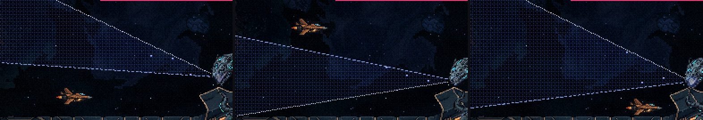
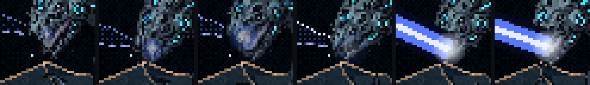
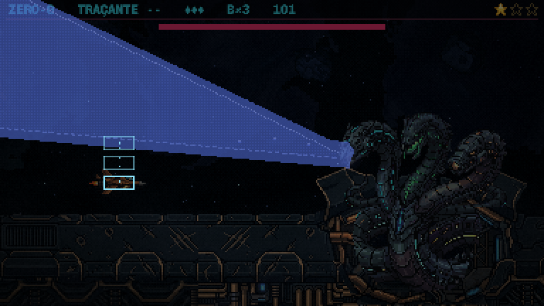
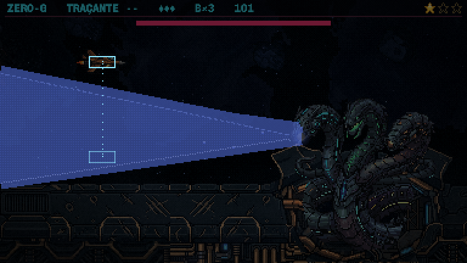
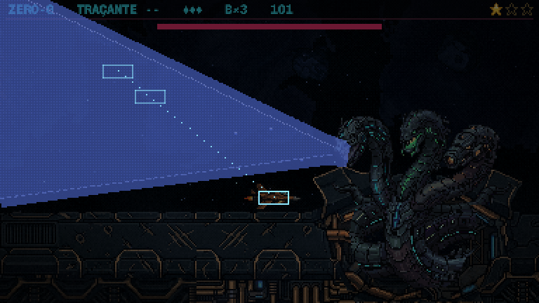

A Serpente: o raio, a varredura avisada
01/11/2026 · rodada 8 das habilidades (o raio da azul) · nada foi commitado.
Antes: o raio varria a tela inteira, do alto até o casco, e o único lugar seguro era embaixo da mandíbula dela. O jogador só aprendia isso morrendo, e a resposta era sempre a mesma.
Agora (a sua escolha, a varredura avisada): o raio sai da boca da azul e varre só uma fatia da tela. Enquanto ela carrega, a fatia aparece desenhada, e cada vez é uma fatia diferente, então o lugar seguro muda e o jogador o lê.
O aviso
- A linha onde o raio começa: pontilhada, sai da boca dela e fica mais forte conforme a carga enche.
- A linha onde ele para: tracejada, e continua na tela até o raio chegar nela.
- A fatia entre as duas fica levemente marcada de azul. Quando o raio sai, só o pedaço que ele ainda vai varrer continua marcado.
- Pontos claros correm da linha de início para a de parada: é o sentido em que ele vai girar.
- A boca da azul brilha e pulsa cada vez mais rápido durante a carga, e solta um clarão quando o raio sai.


As três fatias
Três disparos por uso, sempre nesta ordem:
- A fatia de cima (1,6 s de carga, varre em 0,9 s): fica embaixo.
- A fatia de baixo (1,6 s de carga, varre subindo em 0,9 s): sobe.
- Quase a tela toda, do alto até a altura do casco (2 s de carga, porque é a viagem mais longa; varre em 1,3 s): só embaixo da mandíbula dela, perto do casco. O esconderijo antigo virou o final da sequência.



Ela continua no idle. No vácuo o raio é reto, então ele só pode girar porque a cabeça gira: a animação da azul vai virar a cabeça junto com a varredura (a de hoje só treme parada). Isso entra na fase das animações. O desenho do raio também é provisório.
Medido quadro a quadro, contra a hitbox da nave e a largura do raio (12 px):
- Saindo de cada fatia, a menor folga foi de 19 px na de cima, 14 px na de baixo e 12 px embaixo da mandíbula. Nenhum toque.
- Parada no meio da tela, a nave é atingida nas três. O lugar seguro de uma fatia é atingido na outra: quem fica embaixo leva a de baixo, e quem fica em cima leva a última.
Para você decidir
- O aviso: dá para ler a fatia a tempo (as duas linhas, o azul entre elas e os pontos correndo)?
- O ritmo: 1,6 s de carga nas duas primeiras e 2 s na última está bom?
- A ordem: fica sempre cima, baixo, quase tudo (como os padrões do gás), ou varia?